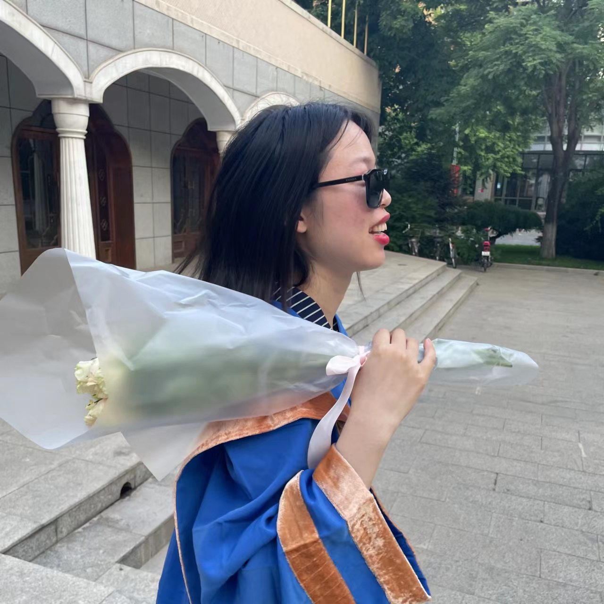
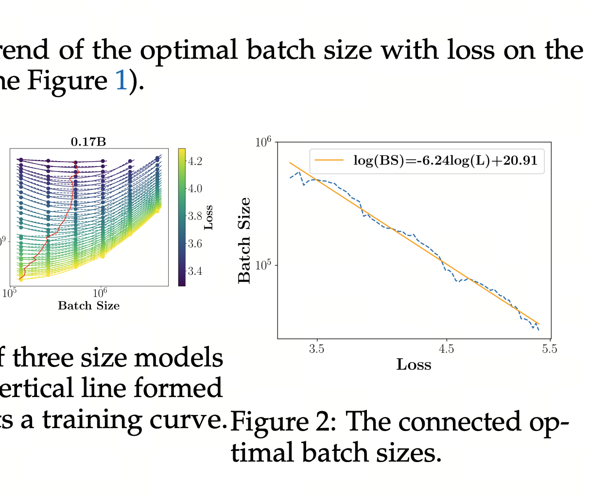
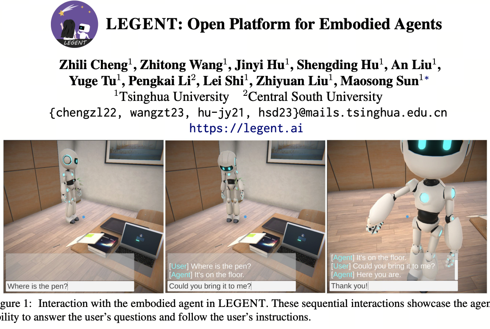

|
Yuge Tu
Hi! I'm a student intern at the Tsinghua NLP Lab in Beijing. Grateful to be guided by the brilliant mind of Shengding Hu!
I'm in GAP year and looking for PhD/intern positions. Please DO contact me if you think I'm a good fit for your lab.
BTW, I'm a joyful young mom chasing my dream (my little one was born in 2022).
Email /
CV /
Scholar /
Twitter /
Github
|

|
Research
I'm interested in large language models and embodied AI.
|
|

|
MiniCPM: Unveiling the Potential of Small Language Models with Scalable Training Strategies
Shengding Hu,
Yuge Tu,
Xu Han, Chaoqun He, Ganqu Cui, Xiang Long, Zhi Zheng, Yewei Fang, Yuxiang Huang, Weilin Zhao, Xinrong Zhang, Zheng Leng Thai, Kaihuo Zhang, Chongyi Wang, Yuan Yao, Chenyang Zhao, Jie Zhou, Jie Cai, Zhongwu Zhai, Ning Ding, Chao Jia, Guoyang Zeng, Dahai Li, Zhiyuan Liu, Maosong Sun
arXiv, 2024
github /
blog /
arXiv
Our small LLM with 2.4B non-embedding parameters surpasses Llama-13B / Mistral-7B! Made possible by extensive model wind tunnel experiments for optimal scaling and the Warmup-Stable-Decay (WSD) learning rate scheduler for continuous training.
|
|

|
LEGENT: Open Platform for Embodied Agents
Zhili Cheng, Zhitong Wang, Jinyi Hu, Shengding Hu, An Liu,
Yuge Tu,
Pengkai Li, Lei Shi, Zhiyuan Liu, Maosong Sun
arXiv, 2024
github /
demo /
video /
arXiv
LEGENT is a wonderful 3D environment for developing communicative and manipulable agents using LLM and LMM. Please try it!
|
© 2024 Yuge Tu. All rights reserved. Forked from Jon Barron's source code.
|
|
{kind=link}
{kind=link}